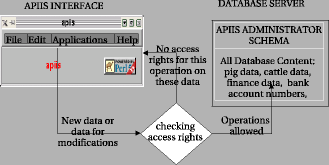

Next: Method for the public
Up: Checking of the access
Previous: Checking update statement
Contents
In case of DELETE statement the algorithm works the same like for UPDATE with exclusion of step 3 (DELETE statement is executed on the whole record and the columns are not checked).
The symbolic schema of modifying database content is shown on the Figure 1.3.
Figure 1.3:
Modifying the database content
|

|
All modifying query (insert,update,delete) are managed by the metauser (see ![[*]](crossref.png) ).
).
Marek Imialek
2006-06-22